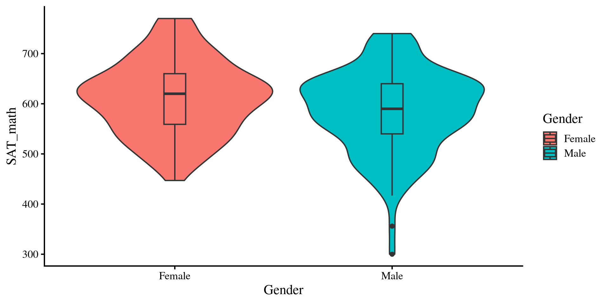
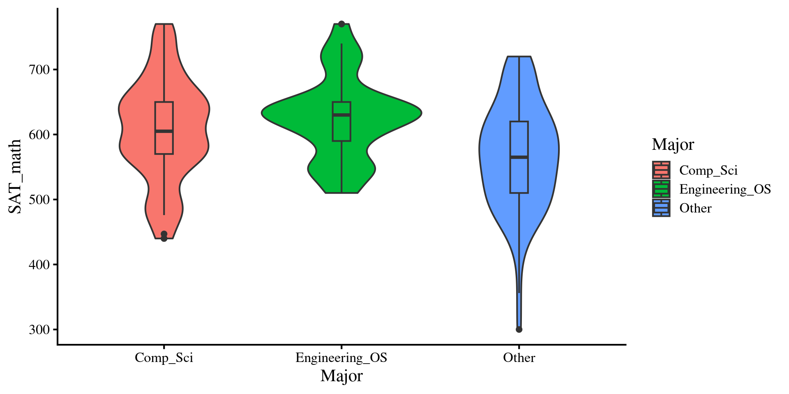
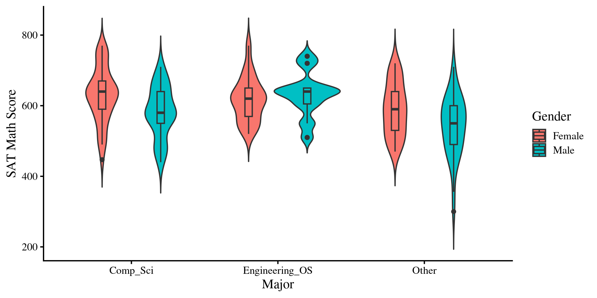
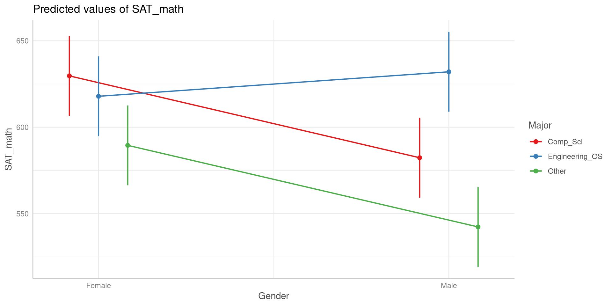

# run for packages that you have not installed yetinstall.packages("ggeffects")
library(tidyverse)library(emmeans)library(ggeffects)# I am setting a theme for all the plotstheme_set(theme_classic(base_size =16, accent ="#7a0b80",base_family ='serif'))
The ggeffects package (Lüdecke et al., 2025) helps summarize marginal effects (usually predicted group means) of statistical model such as computing model predictions and plotting results.
Data
This is some data about SAT scores and undegraduate GPA for second year college student. I got the data from here.
dat <- rio::import("https://fabio-setti.netlify.app/data/major_gender_SAT.csv")
Turn Variables into Factors
For this lab we are going to look at how both Major and Gender impact SAT_math. Because Major and Gender are both categorical variables, we turn them into factors first.
When running factorial ANOVAs, you should always check group size for a reason that we will talk about later. Because we will look at Gender and Major at the same time, we cross-tabulate the number of people at each of their level:
# count how many people in each grouptable(dat$Gender, dat$Major)
Comp_Sci Engineering_OS Other
Female 39 39 39
Male 39 39 39
We have 6 groups, and this is a balanced design, meaning that all groups have equal sizes.
Multiple One-way ANOVAs?
If we are interested in the effect of both Gender and Major on SAT_math. Couldn’t we just run two separate one-way ANOVAs? If we do that we get the following results:
# this is equivalent to a t-test btwreg_gender <-lm(SAT_math ~ Gender, dat)anova(reg_gender)
Analysis of Variance Table
Response: SAT_math
Df Sum Sq Mean Sq F value Pr(>F)
Gender 1 41947 41947 6.9013 0.009187 **
Residuals 232 1410142 6078
---
Signif. codes: 0 '***' 0.001 '**' 0.01 '*' 0.05 '.' 0.1 ' ' 1
Analysis of Variance Table
Response: SAT_math
Df Sum Sq Mean Sq F value Pr(>F)
Major 2 141746 70873 12.494 7.043e-06 ***
Residuals 231 1310343 5672
---
Signif. codes: 0 '***' 0.001 '**' 0.01 '*' 0.05 '.' 0.1 ' ' 1
So, we get that there are differences in mean SAT_math across both Gender and Major. This is all fine and good, but what are some things that we may be missing if we approach our research question in this way? 🤔
Interactions Between Independent Variables
In our case, the main thing that we might miss is the interaction between Gender and Major. The idea of an interaction is that the effect of one independent variable may depend on the effect of another independent variable. Something that may be more familiar is the idea of intersectionality, which in statistics is exactly expressed as an interaction effect.
We can use the * sign to specify interactions between variables. in our case, we would run
Analysis of Variance Table
Response: SAT_math
Df Sum Sq Mean Sq F value Pr(>F)
Gender 1 41947 41947 7.8433 0.005539 **
Major 2 141746 70873 13.2518 3.593e-06 ***
Gender:Major 2 49006 24503 4.5815 0.011200 *
Residuals 228 1219389 5348
---
Signif. codes: 0 '***' 0.001 '**' 0.01 '*' 0.05 '.' 0.1 ' ' 1
Notice the SAT_math ~ Gender*Major. This is to tell the lm() function that we want 2 independent variables and that we want an interaction between the two variables. The order of the IVs in the lm() formula is irrelevant.
when running factorial ANOVAs, the first thing you look at is the interaction effect, the Gender:Major line. Everything that follows depends on whether the interaction effect is significant or not. If it is not significant, you can just report the main effects as shown on the left. Here, however, it is significant.
A Graphical intuition
Why should you always look at the interaction effect first? The main effects (first two rows in ANOVA table) of Gender and Major were also significant after all. This graphical example should help explain why:
Females tend to have higher SAT_math scores than males.
dat %>%group_by(Gender) %>%summarise(Mean_Gender =mean(SAT_math))
# A tibble: 2 × 2
Gender Mean_Gender
<fct> <dbl>
1 Female 612.
2 Male 586.
Plot code
ggplot(dat, aes(y = SAT_math, x = Gender, fill = Gender)) +geom_violin() +geom_boxplot(width =0.1)

Other majors tend to have lower SAT_math scores compared to both computer science majors and engineering and other science majors.
dat %>%group_by(Major) %>%summarise(Mean_Major =mean(SAT_math))
# A tibble: 3 × 2
Major Mean_Major
<fct> <dbl>
1 Comp_Sci 606.
2 Engineering_OS 625.
3 Other 566.
Plot code
ggplot(dat, aes(y = SAT_math, x = Major, fill = Major)) +geom_violin() +geom_boxplot(width =0.1)

Females still seems to do better than males on average, however, that is not true for engineering and other science majors ❗
dat %>%group_by(Gender, Major) %>%summarise(Mean_Both =mean(SAT_math)) %>%arrange(desc(Mean_Both))
# A tibble: 6 × 3
# Groups: Gender [2]
Gender Major Mean_Both
<fct> <fct> <dbl>
1 Male Engineering_OS 632.
2 Female Comp_Sci 630.
3 Female Engineering_OS 618.
4 Female Other 590.
5 Male Comp_Sci 582.
6 Male Other 542.
Plot code
ggplot(dat, aes(x = Major, y = SAT_math, fill = Gender)) +geom_violin(trim =FALSE, position =position_dodge(width =0.8)) +geom_boxplot(width =0.1, position =position_dodge(width =0.8)) +labs(x ="Major",y ="SAT Math Score",fill ="Gender" )

Interaction Effects
So, on the last slides we saw that females tended to have higher SAT_math scores, but that pattern was reversed for engineering and other science majors (the interaction effect!), where males tended to have higher SAT_math scores. Then, the interpretation of the main effect of female on SAT_math would be misleading, as it does not generalize to all majors 🧐
A common way of visualizing interaction effects is looking at interaction plots like the one on the right (I will show the code for it soon). The dots represent the means of Gender by Major. In general, if an interaction effect exists you will see some lines on the plot cross each other.
You can see that the line where the trend is reversed is the line for engineering and other science majors and thus the reason for the significant interaction effect.

The ggeffects Package: Group Means
The ggeffects package provides useful functions for generating group means based on your analysis. We’ll quickly use it to get group means and plot them, but it has more sophisticated uses.
# Predicted values of SAT_math
Major: Comp_Sci
Gender | Predicted | 95% CI
-----------------------------------
Female | 629.69 | 606.62, 652.77
Male | 582.36 | 559.28, 605.43
Major: Engineering_OS
Gender | Predicted | 95% CI
-----------------------------------
Female | 617.90 | 594.82, 640.97
Male | 632.05 | 608.98, 655.13
Major: Other
Gender | Predicted | 95% CI
-----------------------------------
Female | 589.51 | 566.44, 612.59
Male | 542.36 | 519.28, 565.43
The idea of the ggeffects package is similar to emmeans, where we first modify an lm() object and then apply other functions to it. first, we use the ggpredict() function.
We first supply the lm() object, reg_2way in our case, and then specify the groups with the terms = argument.
Here, I print the ggeff element that I just created. When I do so, it shows the group means (under the predicted column) and the \(95 \%\) CIs in a pretty clean format ✨
The ggeffects Package: Interaction Plot
We can also plot the group means along their \(95 \%\) CIs. This is the most common way you will see results of factorial ANOVAs visualized.
plot(ggeff, connect_lines =TRUE)
this is the plot() function from base R. For this to work, you need to make sure that the first argument (ggeff here) is an object created with the ggpredict() function.
Main Effects?
We just saw how the interaction effects makes the interpretation of the results a bit trickier, because the mean differences in SAT_math across Gender changed depending on the levels of Major. However, how can we make conclusions about the effect of Gender and the effect of Major on SAT_math?
The reulst that we got for our factorial ANOVA were:
anova(reg_2way)
Analysis of Variance Table
Response: SAT_math
Df Sum Sq Mean Sq F value Pr(>F)
Gender 1 41947 41947 7.8433 0.005539 **
Major 2 141746 70873 13.2518 3.593e-06 ***
Gender:Major 2 49006 24503 4.5815 0.011200 *
Residuals 228 1219389 5348
---
Signif. codes: 0 '***' 0.001 '**' 0.01 '*' 0.05 '.' 0.1 ' ' 1
The first two lines are the main effects of Gender and Major, and they are both significant. Is that not enough to say that Gender and Major affect SAT_math? Yes and no.
In general, the main effect from the ANOVA table tells us that both Gender and Major have an effect on SAT_math, but, for either variable, we do not know whether that effect exists at all levels of the other factor.
This is what we saw previously, where there were we saw that the patterns of mean differences in SAT_math by Gender was not consistent across level of Major.
Simple Main Effects!
To appropriately investigate the effects of Gender and Major, we need to be more precise, and here is where simple main effects come in. We can look at effect of Gender on SAT_math, but we will do it at every level of Major 💡 This is equivalent to running a one-way ANOVA for one IV, at each level of another IV. We’ll need the emmeans package.
A one-way ANOVA is equivalent to a t-test when there are only two groups! So here we see that there are significant differences in SAT_math means by Gender for both computer science majors and other majors, but not for engineering and other science majors.
We already figure this out some slides ago by plotting the means, but here we confirm our intuition.
We pass em_res to joint_tests() function and specify the variable by which we want to look at differences:
joint_tests(em_res, by ="Major")
Major = Comp_Sci:
model term df1 df2 F.ratio p.value
Gender 1 228 8.169 0.0047
Major = Engineering_OS:
model term df1 df2 F.ratio p.value
Gender 1 228 0.730 0.3936
Major = Other:
model term df1 df2 F.ratio p.value
Gender 1 228 8.107 0.0048
Simple Main Effects: Other way around
If we are interested in the effect of Major by Gender, all we need to do is use the joint_tests() function, but change the by = argument.
joint_tests(em_res, by ="Gender")
Gender = Female:
model term df1 df2 F.ratio p.value
Major 2 228 3.110 0.0465
Gender = Male:
model term df1 df2 F.ratio p.value
Major 2 228 14.723 <.0001
In both cases, the results are significant, meaning that the effect of Major on SAT_math is consistent across levels of Gender. However, we can see that there seem to be large mean differences in males compared to females.
These are important nuances that we miss without looking at simple main effects!
# just printing the means by genderggpredict(reg_2way, terms =c( "Major","Gender"))
# Predicted values of SAT_math
Gender: Female
Major | Predicted | 95% CI
-------------------------------------------
Comp_Sci | 629.69 | 606.62, 652.77
Engineering_OS | 617.90 | 594.82, 640.97
Other | 589.51 | 566.44, 612.59
Gender: Male
Major | Predicted | 95% CI
-------------------------------------------
Comp_Sci | 582.36 | 559.28, 605.43
Engineering_OS | 632.05 | 608.98, 655.13
Other | 542.36 | 519.28, 565.43
Post-Hoc Tests
Just as we did with one-way ANOVA, we can run post-hoc tests to see where the mean difference are. we still use the pairs() function, but we have to specify the level to test mean differences by.
By Gender:
pairs(em_res, by ="Gender", adjust ="tukey")
Gender = Female:
contrast estimate SE df t.ratio p.value
Comp_Sci - Engineering_OS 11.8 16.6 228 0.712 0.7565
Comp_Sci - Other 40.2 16.6 228 2.426 0.0422
Engineering_OS - Other 28.4 16.6 228 1.714 0.2022
Gender = Male:
contrast estimate SE df t.ratio p.value
Comp_Sci - Engineering_OS -49.7 16.6 228 -3.001 0.0084
Comp_Sci - Other 40.0 16.6 228 2.415 0.0434
Engineering_OS - Other 89.7 16.6 228 5.416 <.0001
P value adjustment: tukey method for comparing a family of 3 estimates
By Major:
pairs(em_res, by ="Major", adjust ="tukey")
Major = Comp_Sci:
contrast estimate SE df t.ratio p.value
Female - Male 47.3 16.6 228 2.858 0.0047
Major = Engineering_OS:
contrast estimate SE df t.ratio p.value
Female - Male -14.2 16.6 228 -0.855 0.3936
Major = Other:
contrast estimate SE df t.ratio p.value
Female - Male 47.2 16.6 228 2.847 0.0048
…And the cohen’s \(d\)s
Similarly, you can get the cohen’s d the same way we did in Lab 7. Since we are doing every possible difference across 6 means, we get 15 mean comparisons:
contrast effect.size SE df lower.CL
Female Comp_Sci - Male Comp_Sci 0.6472 0.228 228 0.1970
Female Comp_Sci - Female Engineering_OS 0.1613 0.227 228 -0.2852
Female Comp_Sci - Male Engineering_OS -0.0323 0.226 228 -0.4785
Female Comp_Sci - Female Other 0.5494 0.228 228 0.1003
Female Comp_Sci - Male Other 1.1942 0.233 228 0.7346
Male Comp_Sci - Female Engineering_OS -0.4860 0.228 228 -0.9344
Male Comp_Sci - Male Engineering_OS -0.6795 0.229 228 -1.1301
Male Comp_Sci - Female Other -0.0978 0.227 228 -0.5441
Male Comp_Sci - Male Other 0.5470 0.228 228 0.0979
Female Engineering_OS - Male Engineering_OS -0.1935 0.227 228 -0.6401
Female Engineering_OS - Female Other 0.3881 0.227 228 -0.0595
Female Engineering_OS - Male Other 1.0329 0.232 228 0.5766
Male Engineering_OS - Female Other 0.5817 0.228 228 0.1322
Male Engineering_OS - Male Other 1.2265 0.234 228 0.7661
Female Other - Male Other 0.6448 0.228 228 0.1946
upper.CL
1.0974
0.6077
0.4140
0.9985
1.6538
-0.0375
-0.2289
0.3485
0.9960
0.2530
0.8358
1.4892
1.0311
1.6868
1.0949
sigma used for effect sizes: 73.13
Confidence level used: 0.95
Effect Sizes For Factorial ANOVA
The interpretation of \(\eta^2\) and \(\omega^2\) as variance explained in the outcome is still valid in factorial ANOVA. However, the calculation of effect sizes is a bit more nuanced with factorial designs, because we now have 3 components, the main effect of Gender, the main effect of Major, and the interaction effect.
These are called partial\(\eta^2\) and \(\omega^2\). They quantify how much variance in the outcome is uniquely explained by each component separately. For example, Major uniquely explains \(9\%\) of the variance in SAT_math. The idea of uniquely explained variance is tied to the notion statistical control, which we will discuss in more detail when looking at multiple regression.
Sums of Squares and Unbalanced Data
Now it’s where things get a bit annoying for “reasons” 😞, but essentially, there are 3 different ways of calculating sums of squares, called type I, II, and III. This becomes a concern when you are working with an unbalanced design, meaning that your groups have unequal sample sizes (almost always the case).
As a reminder, we currently have a balanced design:
table(dat$Gender, dat$Major)
Comp_Sci Engineering_OS Other
Female 39 39 39
Male 39 39 39
When all group sizes are equal, the type of sums of squares makes no difference. I am going to randomly take out some rows form the data to make the groups unequal. To show what happens when we use different sums of squares.
Comp_Sci Engineering_OS Other
Female 29 25 27
Male 26 30 27
And now we have a different number of students in each group.
set.seed()
the set.seed(n) function sets a “random state”. This guarantees that even if you are generating some random numbers, other people will be able to replicate it (⁉️). Here I take out rows at random, but you will get the same outcome as long as we use the same seed.
Results Comparison: Type II Sums of Squares
R will use type I sums of square “by default”, which is generally not good when you are looking at interaction effects.
Analysis of Variance Table
Response: SAT_math
Df Sum Sq Mean Sq F value Pr(>F)
Gender 1 16649 16649 3.2897 0.0716121 .
Major 2 94178 47089 9.3047 0.0001513 ***
Gender:Major 2 36771 18385 3.6329 0.0286716 *
Residuals 158 799600 5061
---
Signif. codes: 0 '***' 0.001 '**' 0.01 '*' 0.05 '.' 0.1 ' ' 1
For Type II sum of squares we can use the Anova() function from car:
car::Anova(reg_unb, type =2)
Anova Table (Type II tests)
Response: SAT_math
Sum Sq Df F value Pr(>F)
Gender 19656 1 3.8840 0.0504944 .
Major 94178 2 9.3047 0.0001513 ***
Gender:Major 36771 2 3.6329 0.0286716 *
Residuals 799600 158
---
Signif. codes: 0 '***' 0.001 '**' 0.01 '*' 0.05 '.' 0.1 ' ' 1
Although the results are “the same” here, this is the case where you can see a lot of differences in practice!
ATTENTION: Type III Sums of Squares
The type III sums of squares takes a bit of extra work to set up, namely, you must run the options(contrasts = c("contr.sum","contr.poly")) and rerun the regression:
options(contrasts =c("contr.sum","contr.poly"))reg_unb <-lm(SAT_math ~ Gender*Major, dat_unbalanced)car::Anova(reg_unb, type =3)
Regardless of type of sums of square, the interaction effect has the exact same p-value, but the main effects can vary greatly.
Why all this counterintuitive stuff? Well, ANOVA is a regression, and regressions want numeric variables. There are many ways to trick regression into thinking that categorical variables are numbers (see here), and the way in which is done will influence ANOVA results.
Type I, II, or III?
The distinction between sums of squares is very important because they test different hypotheses. I am restating the great explanation given on this page, but if we have a DV \(Y\) and two IVs \(A\) and \(B\):
Type I: This is used to test additional variance explained as you add predictors sequentially. So, first we look at the effect of \(A\) by itself, then the effect of \(B\) accounting for \(A\), and then the effect of the interaction \(A \times B\), accounting for both \(A\) and \(B\). (not good in most cases)
Type II: here we test the effect of \(A\) accounting for \(B\), the effect of \(B\) accounting for \(A\), and the effect of \(A \times B\) accounting for both \(A\) and \(B\).
Type III: here we test the effect of \(A\) accounting for both \(B\) and \(A \times B\), the effect of \(B\) accounting for both \(A\) and \(A \times B\), and the effect of \(A \times B\) accounting for both \(A\) and \(B\).
The accounting for part is once again the idea of statistical control. So, the hypotheses that these sums of squares use are qualitatively different. If you run ANOVAs with unequal groups, you should make sure you understand these differences.
SPSS and SAS use type III sum of square by default, while in R you will more often see Type II sum of square (the default of the car package). There is a lot of debate in regards to which of the two is more appropriate, and you should justify your choice between either (software default is not a good justification!).
References
Lüdecke, D., Aust, F., Crawley, S., Ben-Shachar, M. S., & Anderson, S. C. (2025). Ggeffects: Create Tidy Data Frames of Marginal Effects for ’ggplot’ from Model Outputs.